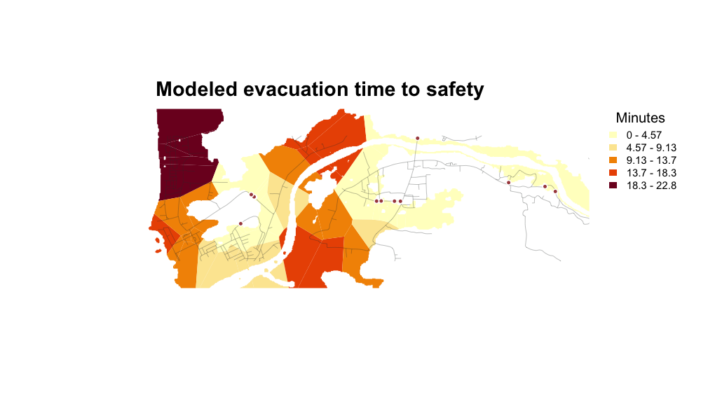
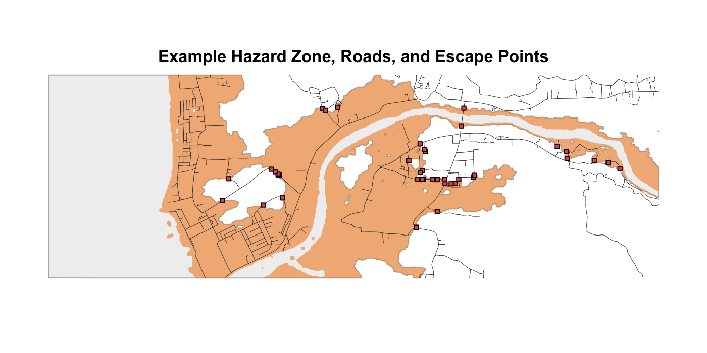
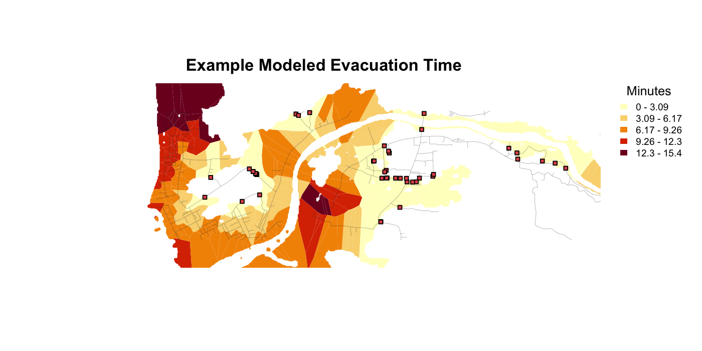

evacpath is an R package for road-constrained pedestrian evacuation modeling using least-cost path analysis. It supports researchers, planners, and analysts who need a transparent workflow for exploring modeled distance to safety and evacuation time from hazard, road/pathway, and elevation inputs in a projected study area.
evacpath is available from CRAN with a permanent CRAN package DOI. Package documentation and guides are available at the evacpath website.
The package is designed around a simple idea:
hazard zone + roads/pathways + DEM + projected CRS -> distance-to-safety and evacuation-time outputs
The workflow builds on open-source least-cost path methods for evacuation planning (Cordero et al. 2025) and uses leastcostpath for least-cost path and movement-potential modeling (Lewis 2023; Lewis 2021).

Modeled evacuation time to safety for the compact packaged example.
What evacpath produces
| Output | Use |
|---|---|
| Candidate safety exits | Road intersections with the selected escape boundary. |
| Least-cost distance to safety | Modeled road-constrained distance from sampled origins. |
| Modeled evacuation-time surface | Distance converted with a stated walking-speed assumption. |
| Evacuation polygons | Mapped distance and time output across the selected hazard zone. |
| Scenario summaries | Sensitivity of modeled metrics to named assumptions. |
| Route diagnostics and bottlenecks | Input checks and modeled high-use-corridor outputs. |
Start with the Get started guide, browse the example gallery, review the tsunami workflow, compare scenarios, or consult the reference.
Installation
Install the released, peer-reviewed package from CRAN:
install.packages("evacpath")Install the development version from GitHub only when you need changes that have not yet been released on CRAN:
remotes::install_github("el-cordero/evacpath")Core workflow
library(evacpath)
result <- run_evacpath(
hazard_zone = "path/to/hazard_zone.tif",
roads = "path/to/roads.gpkg",
dem = "path/to/dem.tif",
target_crs = "EPSG:XXXX",
region_name = "Study area",
road_buffer_m = 2,
escape_buffer_m = 5,
final_road_buffer_m = 3,
seed = 23401,
walking_speed_mps = 1.22,
clip_mode = "hazard",
progress = TRUE
)
result$evac_polygons
result$distance_points
write_evac_outputs(
result,
output_dir = "outputs",
prefix = "study_area"
)Main package functions
| Function | Purpose |
|---|---|
read_spatial() |
Reads either a file path or an existing terra object. |
prepare_hazard_zone() |
Converts an inundation raster into a hazard-zone raster or polygon. |
clean_roads() |
Removes roads/pathways based on user-defined attributes. |
prepare_evac_inputs() |
Reads and projects the hazard zone, roads, and DEM. |
make_evac_grid() |
Creates the evacuation grid over the hazard zone. |
find_escape_points() |
Finds candidate exits where roads cross the hazard boundary. |
make_road_mask() |
Buffers roads and escape points to constrain the DEM. |
make_road_origins() |
Creates road-based origin points inside the hazard zone. |
make_conductance_surface() |
Builds the slope-based conductance surface. |
calc_min_distance_to_safety() |
Calculates minimum least-cost distance to safety. |
calc_evac_time() |
Converts distance to evacuation time. |
make_evac_polygons() |
Creates Voronoi evacuation-distance/time polygons. |
run_evacpath() |
Runs the full workflow. |
compare_evac_scenarios() |
Compares walking-speed and least-cost-path assumptions. |
map_evac_bottlenecks() |
Maps high-use modeled evacuation corridors. |
diagnose_evac_model() |
Runs spatial quality assurance and quality control checks. |
validate_evac_routes() |
Compares modeled routes with reference routes. |
write_evac_outputs() |
Writes the main outputs to disk. |
Customizable assumptions
Most modeling assumptions are explicit parameters:
run_evacpath(
...,
target_crs = "EPSG:XXXX",
grid_resolution = NULL,
grid_resolution_factor = 5,
road_buffer_m = 2,
escape_buffer_m = 5,
final_road_buffer_m = 3,
dem_resolution = NULL,
lcp_cost_function = "tobler",
lcp_neighbours = 16,
lcp_crit_slope = 12,
lcp_max_slope = NULL,
walking_speed_mps = 1.22,
clip_mode = "hazard"
)walking_speed_mps controls the conversion from route distance to travel time. The lcp_* arguments change the conductance surface and can change route geometry. Set keep_routes = TRUE when you want to retain selected routes for bottleneck analysis.
Tsunami preprocessing
Some coastal workflows need two tsunami zones. The land-only inundation zone is used for origins and mapping. A second zone combines the land inundation footprint with water so that the coastline is not treated as an artificial escape boundary.
library(terra)
library(evacpath)
tsunami <- rast("path/to/inundation.nc")
dem <- rast("path/to/topography.nc")
roads <- vect("path/to/roads.shp")
zones <- prepare_tsunami_zones(
inundation = tsunami,
dem = dem,
target_crs = "EPSG:XXXX",
inundation_threshold = 0,
dem_sign_multiplier = 1
)
roads <- clean_roads(
roads,
exclude = list(field = "road_type", values = "pier"),
target_crs = "EPSG:XXXX"
)
result <- run_evacpath(
hazard_zone = zones$hazard_zone, # land-only tsunami evacuation zone for origins/output
escape_zone = zones$escape_zone, # zone + water for true inland escape boundary
roads = roads,
dem = zones$dem,
target_crs = "EPSG:XXXX",
region_name = "Study area"
)Do not use the land-only hazard_zone to find escape points in tsunami workflows unless you intentionally want the coastline to act as a boundary. In most tsunami cases, use escape_zone = zones$escape_zone.
Scenario comparison
Planning assumptions can be compared without rewriting the workflow:
comparison <- compare_evac_scenarios(
hazard_zone = hazard,
roads = roads,
dem = dem,
target_crs = "EPSG:XXXX",
scenarios = list(
baseline = list(walking_speed_mps = 1.22),
slow_walkers = list(walking_speed_mps = 0.75),
conservative_lcp = list(lcp_neighbours = 8, lcp_max_slope = 30)
)
)
comparison$summaryUse diagnose_evac_model() to review spatial inputs, keep_routes = TRUE in run_evacpath() when route geometries are needed, and map_evac_bottlenecks() to identify high-use modeled corridors.
Community and project policies
Read the contribution guide, Code of Conduct, support policy, and security policy. Report bugs or request enhancements through the issue tracker.
Notes
- Use a projected CRS in meters before distance modeling.
- Keep case-specific preprocessing outside the core package when possible.
- Do not assume every DEM needs to be multiplied by
-1; make that decision per dataset. - Do not assume every road layer has the same fields; use
clean_roads()with region-specific settings. - Use
max_originsfor exploratory runs and remove or increase it for final production runs.
Time-grid output
By default, run_evacpath() now clips result$evac_polygons / result$time_grid to the full hazard zone, not just the buffered road network. Movement is still calculated using the road-constrained conductance surface, but the mapped time grid is a Voronoi-style surface over the hazard/inundation zone. Use clip_mode = "road_hazard" only when you want the older road-buffer-limited output.
Example data and figures
Small example inputs are included in inst/extdata/:
inst/extdata/dem.tif
inst/extdata/rds.gpkg
inst/extdata/tsunami_inundation_depth.tifThese files are from the Jakarta example dataset and are used only to demonstrate how to load package data:
dem <- terra::rast(system.file("extdata/dem.tif", package = "evacpath"))
roads <- terra::vect(system.file("extdata/rds.gpkg", package = "evacpath"))
inundation <- terra::rast(system.file("extdata/tsunami_inundation_depth.tif", package = "evacpath"))The detailed diagnostic example is available at vignettes/diagnostic-example.Rmd. It walks through each major function separately, including tsunami-specific zone preparation, inset cropping of roads used for escape-point detection, road-aware escape-boundary generation, least-cost-path testing, and final time-grid mapping.
The README figures are generated with terra plotting code in inst/scripts/make-readme-figures.R. The figures use a focused projected window (x = 669000 to 675000, y = 9223000 to 9225000) so the examples stay readable.

Example hazard zone, roads, and escape points

Example modeled evacuation time
For tsunami workflows, the preferred escape-point pattern is:
zones <- prepare_tsunami_zones(inundation, dem, target_crs = target_crs)
roads_for_escape <- crop_roads_to_inner_extent(
roads = roads,
zone = zones$escape_zone,
inset_x_m = 250,
inset_y_m = 250
)
escape_boundary_zone <- make_road_aware_escape_zone(
escape_zone = zones$escape_zone,
roads = roads_for_escape,
road_buffer_m = 2,
crop_buffer_m = 3
)
escape_points <- find_escape_points(
hazard_zone = escape_boundary_zone,
roads = roads_for_escape
)Use ?evacpath after running devtools::document() or installing the package to view the package-level help page.
References
Cordero, E., Ruiz Vélez, R., Huérfano Moreno, V., Sherman, C., 2025. Enhancing tsunami evacuation strategies in Puerto Rico using open-source least-cost path analysis. J. Disaster Sci. Manag. 1, 18. https://doi.org/10.1007/s44367-025-00018-y
Lewis, J., 2023. leastcostpath: Modelling Pathways and Movement Potential Within a Landscape.
Lewis, J., 2021. Probabilistic Modelling for Incorporating Uncertainty in Least Cost Path Results: a Postdictive Roman Road Case Study. Journal of Archaeological Method and Theory 28, 911-924. https://doi.org/10.1007/s10816-021-09522-w